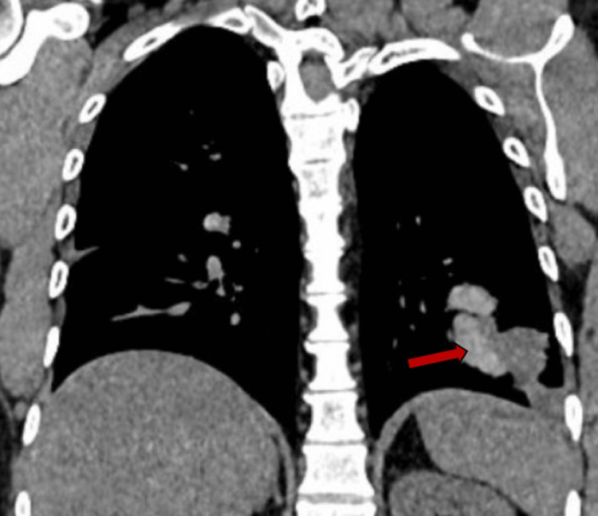
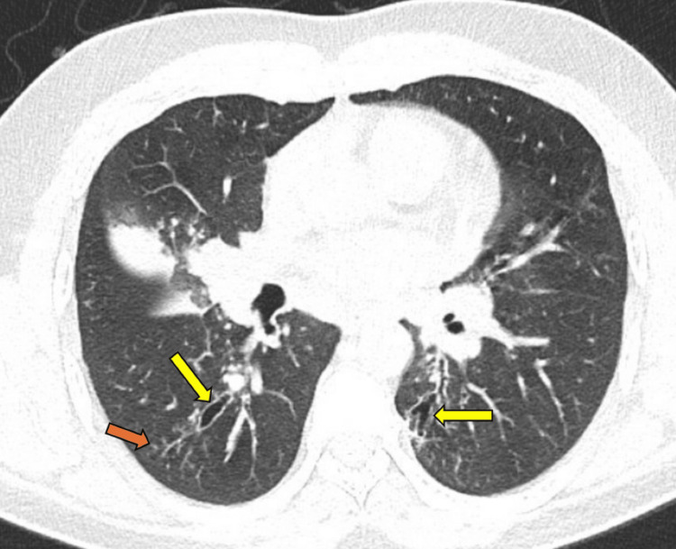
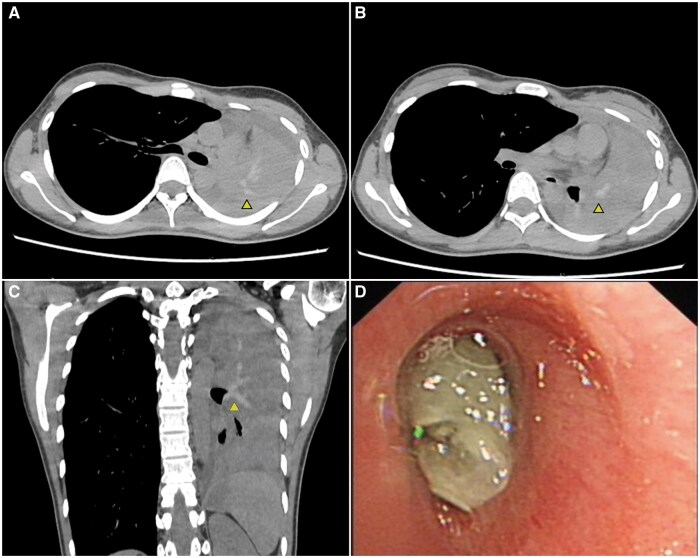
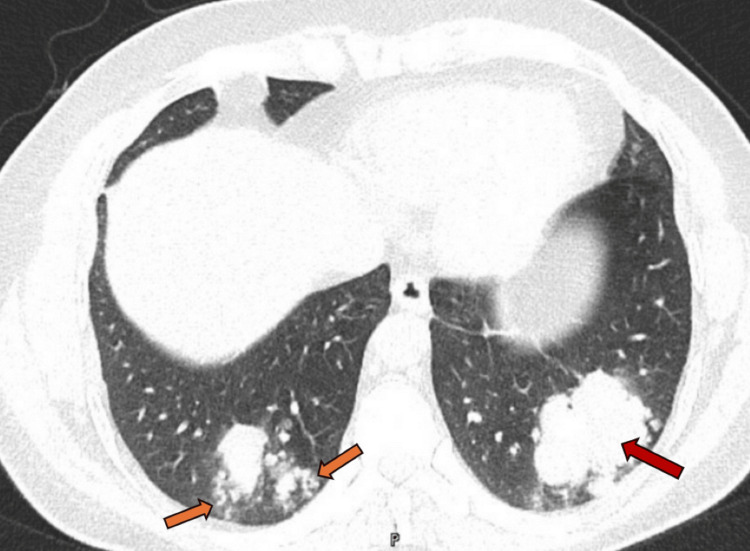

054 — ABPA (viêm phế quản phổi dị ứng do Aspergillus): nút nhầy "ngón tay trong găng", HAM > 70 HU, và giãn phế quản trung tâm
Tags: pattern:nut-nhay-phe-quan pattern:gian-phe-quan-trung-tam pattern:ngon-tay-trong-gang pattern:dam-mo-lung pattern:xep-phoi vung:phoi vung:phe-quan score:ISHAM-ABPA protocol:HRCT-lat-mong protocol:CT-cua-so-trung-that
Mức chắc chắn (certainty): tổng hợp y văn (literature synthesis) — ghép tổng quan cập nhật 2026 về chẩn đoán – điều trị ABPA/ABPM (PMC13655405, CC BY-NC 4.0), ca nguyên văn ABPA không hen có 8 hình CT mô tả toàn phổ hình ảnh (PMC12716455, CC BY 4.0), và ca nguyên văn HAM 105 HU gây xẹp toàn bộ phổi trái (PMC12419793, CC BY 4.0).
Câu chốt: ABPA không phải "hen nặng" mà là bệnh của nút nhầy: bạch cầu ái toan chết theo kiểu ETosis giải phóng DNA/histone → nút nhầy đặc, dính, giàu canxi–sắt–mangan → tăng đậm độ > 70 HU (đậm hơn cơ), lấp phế quản trung tâm → giãn phế quản trung tâm do nút nhầy đẩy thành ra + đám mờ phía sau do viêm phổi ái toan/xẹp. Vì vậy cửa sổ trung thất là bắt buộc: chỉ đọc cửa sổ phổi sẽ bỏ mất HAM — dấu hiệu đặc hiệu nhất và từ 2024 được phép chẩn đoán ABPA một mình.
Phân vai với bài khác: 050 phủ giãn phế quản nói chung (ABPA chỉ là một hàng ma trận); 6126 phủ viêm phế quản nhựa (plastic bronchitis) — nút nhầy dạng khuôn nhưng không tăng đậm độ và không có phản ứng dị ứng Aspergillus; 025 phủ hang – u nấm (aspergilloma). Bài này chỉ đi sâu ABPA/ABPM: hình ảnh nút nhầy + HAM, tiêu chuẩn chẩn đoán 2013/2021/2024, và theo dõi tái phát.
1. Tổng quan bệnh học – cơ chế hình ảnh (TẠI SAO nút nhầy lại > 70 HU, và TẠI SAO giãn phế quản là TRUNG TÂM)
1.1 Cơ chế: từ phản ứng dị ứng đến nút nhầy đặc
- Hai phản ứng cùng lúc: typ I (IgE) và typ III (phức hợp miễn dịch) với nấm sợi định cư trong lòng phế quản — chủ yếu Aspergillus fumigatus, nhưng ở Nhật Schizophyllum commune chiếm ~40% ca cấy dương ở đờm/dịch rửa phế quản (n = 216) và là tác nhân thứ hai sau Aspergillus (PMC13655405).
- Điểm mấu chốt (PMC13655405): bạch cầu ái toan hoạt hóa tiếp xúc nấm → chết theo kiểu ETosis, phóng thích DNA + histone thành bẫy ngoại bào (extracellular traps). Các bẫy này tạo nút nhầy nâu, ít nước, dai như bơ đậu phộng — khác hẳn nút nhầy trắng/ướt do bạch cầu trung tính.
- Vì sao nút nhầy > 70 HU: nút nhầy giàu canxi, sắt, mangan và ít nước → đậm độ vượt cơ ngực (cơ ~ 40–60 HU), đo được > 70 HU; ca PMC12419793 đo ~105 HU. Trên ảnh, đây là dấu hiệu "tăng đậm độ" (high-attenuation mucus, HAM) — chỉ thấy trên cửa sổ trung thất, vì cửa sổ phổi đặt mức cửa sổ (window level) rất thấp nên mọi mô mềm đều đen.
- HAM gặp ở đâu: > 20% ca ABPA (PMC12419793); dạng ống/phân nhánh từ rốn phổi ra ngoại vi ("glove finger sign"), đôi khi kèm xẹp phổi do tắc hoàn toàn (ca PMC12419793: xẹp toàn bộ phổi trái, nút nhầy bít phế quản gốc trái).
1.2 TẠI SAO giãn phế quản lại ở TRUNG TÂM (và tại sao đám mờ ở ngoại vi)
- Giãn phế quản trung tâm là HẬU QUẢ, không phải nguyên nhân: nút nhầy đặc, thể tích lớn nằm trong phế quản trung tâm → đẩy thành phế quản ra ngoài theo thời gian (PMC13655405). Vì nấm chỉ định cư được ở phế quản lớn (trung tâm) — nơi có khí và niêm mạc rộng — tổn thương bắt đầu và tập trung ở trung tâm; ngoại vi ít bị.
- Đám mờ ngoại vi là tổn thương PHÍA SAU chỗ tắc: nút nhầy bít lòng → viêm phổi ái toan hoặc xẹp phân thùy ở hạ lưu (PMC13655405, PMC12716455). Vì vậy đám mờ di chuyển (fleeting) giữa các lần chụp và hay tái phát cùng vị trí nếu nút nhầy chưa lấy được.
- Ngưỡng giãn phế quản trên HRCT (dùng chung với bài 050): đường kính trong phế quản > 1,5 lần động mạch phổi đi kèm (dấu signet ring) và mất dần thon dần (loss of tapering) khi ra ngoại vi; ở ABPA, tổn thương hai bên, đối xứng, thùy trên ưu thế (PMC12716455 mô tả giãn cả trung tâm và ngoại vi ở ca không điển hình — nên giãn ngoại vi không loại trừ ABPA).
1.3 Dịch tễ và "cái bẫy" của tiêu chuẩn cũ
- Tần suất: một nguồn ghi ~13% bệnh nhân ở phòng khám hen (PMC12716455 dẫn tài liệu 1) — con số này dao động rộng giữa các nơi và không dùng để loại trừ; điều đáng nhớ hơn: ~20% ca ABPA/ABPM không có hen và không có xơ nang, và gần 50% không đạt ngưỡng IgE ≥ 1.000 IU/mL của tiêu chuẩn ISHAM 2013 (khảo sát toàn quốc Nhật, PMC13655405).
- Vì vậy tiêu chuẩn đã thay đổi 2 lần: ISHAM 2013 (IgE ≥ 1.000 + IgE đặc hiệu nấm + 2/3 tiêu chí phụ) → ISHAM 2024 hạ ngưỡng IgE còn 500 IU/mL và cho phép chẩn đoán chỉ dựa vào HAM trong phế quản → tiêu chuẩn Nhật 2021 (10 mục, 3 nhóm; ≥ 6 mục = chắc chắn, 5 mục = có thể).
2. Mẫu hình + chẩn đoán phân biệt theo vị trí (gamut)
2.1 Mẫu hình theo vị trí — "trung tâm trước, ngoại vi sau"
| Vị trí | Mẫu hình | Ý nghĩa |
|---|---|---|
| Phế quản trung tâm (rốn phổi) | Nút nhầy dạng ống/phân nhánh lấp phế quản, ± HAM > 70 HU; giãn phế quản hình trụ/nang | Chữ ký của ABPA — nấm định cư + nút nhầy đẩy thành |
| Thùy trên / thùy giữa–lưỡi | Nút nhầy + xẹp phân thùy, đám mờ di chuyển | Hạ lưu của tắc; hay bị gọi "viêm phổi tái phát" |
| Ngoại vi | Nốt nhỏ, tree-in-bud, đám mờ quanh nút nhầy | Viêm phổi ái toan/viêm tiểu phế quản hạ lưu |
| Toàn phổi | Xẹp toàn bộ một phổi khi nút nhầy bít phế quản gốc | Cấp cứu đường thở (ca PMC12419793) |
2.2 Gamut "nút nhầy lấp phế quản" — 6 thực thể phải phân biệt
- ABPA/ABPM — nút nhầy trung tâm, tăng đậm độ, kèm hen/CF, IgE cao, giãn phế quản trung tâm.
- Bệnh phổi do NTM (MAC/M. abscessus) — nốt + giãn phế quản thùy giữa/lưỡi, không HAM, cấy đờm dương.
- Lao phế quản (endobronchial TB) — hẹp phế quản, xẹp một phân thùy, nốt vệ tinh + hang, không IgE cao.
- Viêm phế quản nhựa (plastic bronchitis) — khuôn phế quản (bronchial cast) tách ra khi ho, thường sau tim bẩm sinh/phẫu thuật Fontan; không HAM.
- Dị tật phế quản (bronchial atresia) — mucocele hình ngón tay + thùy phổi quá sáng (hyperlucent) quanh, không viêm, ổn định nhiều năm.
- U nội phế quản (carcinoid, papilloma) — nút nhầy một bên, một phế quản, kèm khối trong lòng thấy trên CT lát mỏng, không đáp ứng corticoid.
3. Bảng so sánh phân biệt (ma trận đối chiếu)
| Thực thể (entity) | Hình ảnh điển hình | Chốt vào (rule-in) | Chốt loại (rule-out) | Gợi ý xác nhận |
|---|---|---|---|---|
| ABPA | Nút nhầy trung tâm dạng ngón tay-găng ± HAM > 70 HU, giãn phế quản trung tâm hai bên, đám mờ di chuyển | HAM > 70 HU + IgE đặc hiệu A. fumigatus + eosinophil > 500/µL | Giãn phế quản thuần ngoại vi, không nút nhầy, không tăng IgE → không phải ABPA | IgE toàn phần, Af-sIgE/IgG, HRCT 2 cửa sổ |
| Bệnh phổi do NTM | Nốt + giãn phế quản thùy giữa/lưỡi, không nút nhầy tăng đậm độ | Cấy đờm/BAL dương NTM + nốt–giãn phế quản | HAM + IgE rất cao → nghiêng ABPA | Cấy NTM, AFB, HRCT |
| Lao phế quản | Hẹp phế quản, xẹp một phân thùy, hang + nốt vệ tinh | AFB/PCR dương + hang thùy trên | Nút nhầy hai bên tăng đậm độ → không phải lao | AFB, PCR, nội soi phế quản |
| Viêm phế quản nhựa | Khuôn phế quản hình cành cây, đậm độ mô mềm thường, tái phát | Ho ra khuôn phế quản + bệnh tim bẩm sinh/Fontan | HAM > 70 HU → không phải | Nội soi lấy khuôn, giải phẫu bệnh |
| Dị tật phế quản (mucocele) | Khối hình ngón tay một bên + thùy quá sáng, ổn định | Ổn định nhiều năm, không viêm, không IgE cao | Tổn thương hai bên + di chuyển → không phải | So phim cũ, CT lát mỏng |
| U nội phế quản | Khối trong lòng một phế quản + nút nhầy/xẹp hạ lưu | Khối đặc trong lòng + không đáp ứng corticoid | Nút nhầy nhiều phế quản hai bên → không phải | Nội soi sinh thiết |
| Xẹp phổi do nút nhầy (biến chứng ABPA) | Xẹp toàn phổi, trung thất lệch, HAM trong phế quản gốc | HAM dạng ống từ rốn phổi + xẹp | Xẹp không có nút nhầy → tìm nguyên nhân khác | Nội soi gắp nút (cryoprobe), CT sau điều trị |
4. Protocol chụp + tiêu chuẩn chẩn đoán (2013 → 2024) + theo dõi
4.1 Protocol hình ảnh
- HRCT ngực lát mỏng ≤ 1 mm, thì hít vào, tái tạo cả hai cửa sổ — bắt buộc cửa sổ trung thất để đo HAM; thêm thì thở ra nếu nghi tắc nghẽn tiểu phế quản.
- Đo HAM: đặt ROI trên nút nhầy và so với cơ ngực cùng lát; > 70 HU (hoặc đậm hơn cơ) = HAM; ghi vị trí phế quản và lan tới đâu.
- Đo giãn phế quản: tỷ lệ đường kính phế quản / động mạch (> 1,5), mất thon dần, phân bố trung tâm vs ngoại vi, thùy nào.
- X-quang ngực: đám mờ di chuyển so với phim cũ là dấu hiệu rẻ tiền nhưng giá trị — luôn xin phim cũ.
- Không chọc hút/ sinh thiết khối "mass-like" trước khi loại ABPA: ca PMC12716455 có khối giả u ở thùy dưới trái do nút nhầy; sinh thiết chỉ để loại u khi hình ảnh không điển hình.
4.2 Tiêu chuẩn — 3 phiên bản, dùng đúng ngưỡng
| Bộ tiêu chuẩn | Yêu cầu bắt buộc | Ngưỡng / mục phụ | Hiệu năng |
|---|---|---|---|
| Rosenberg 1977 (cũ) | Hen/CF + bệnh cảnh | 8 tiêu chí kinh điển | Độ nhạy 25–49% — không dùng một mình |
| ISHAM 2013 | IgE đặc hiệu nấm (+) và IgE toàn phần ≥ 1.000 IU/mL, nền hen/CF | ≥ 2/3: eosinophil > 500/µL, IgG đặc hiệu nấm (+), hình ảnh điển hình | Độ nhạy 77–83%, độ đặc hiệu 87–91% |
| ISHAM 2024 | Nền bệnh mở rộng (kể cả không hen/CF) | IgE hạ còn ≥ 500 IU/mL; HAM trong phế quản đủ để chẩn đoán | Cập nhật mới nhất |
| Nhật 2021 (ABPA/ABPM) | 10 mục / 3 nhóm: dị ứng – ái toan – nấm | ≥ 6 mục = chắc chắn, 5 mục = có thể | Độ nhạy 94–96%, độ đặc hiệu 90–97%; với nấm không phải Aspergillus: nhạy 91% (ISHAM 2013 chỉ 48%) |
(số liệu PMC13655405)
flowchart TD
A[Hen hoặc xơ nang + đám mờ tái phát / nút nhầy] --> B[HRCT 2 cửa sổ: nút nhầy trung tâm?]
B -->|Có, HAM trên 70 HU| C[Đo IgE toàn phần + Af-sIgE + eosinophil]
B -->|Không HAM nhưng có giãn phế quản trung tâm| C
C --> D{IgE toàn phần và Af-sIgE}
D -->|IgE trên 500 và Af-sIgE dương| E[ABPA/ABPM: điều trị 4 tháng]
D -->|Không đạt ngưỡng| F[Vẫn nghi: nội soi lấy nút nhầy + giải phẫu bệnh + cấy nấm]
F --> G[Đủ 6/10 mục tiêu chuẩn Nhật 2021 = chắc chắn]
E --> H[Theo dõi IgE mỗi 6-8 tuần; tái phát khi IgE tăng trên 50 phần trăm]
4.3 Điều trị và theo dõi (để đọc đúng phim sau điều trị)
- Chuẩn: corticoid uống hoặc azole uống (itraconazole/voriconazole) — đáp ứng 88–100% ở 6–8 tuần (định nghĩa: cải thiện lâm sàng/hình ảnh + IgE giảm ≥ 20%); thời gian 4 tháng, tối đa 6 tháng (PMC13655405). Ca PMC12716455: itraconazole 200 mg × 2/ngày + prednisolone 40 mg giảm dần trong 4 tháng; IgE 10.817 → 1.681 → 1.425 kU/L.
- Tái phát (relapse): triệu chứng/hình ảnh xấu đi + IgE tăng ≥ 50% sau khi loại trừ đợt cấp hen/giãn phế quản (PMC13655405).
- Khó điều trị: 49% không đạt lui bệnh trong 6 tháng; điểm difficult-to-treat ≥ 2 gặp ở ~60%; 4 yếu tố: khởi phát ≤ 50 tuổi, Af-sIgE ≥ 20 kU/L, cấy Aspergillus dương, có HAM (PMC13655405).
- Trên phim sau điều trị: nút nhầy biến mất trước, giãn phế quản có thể tồn tại vĩnh viễn — không dùng "còn giãn phế quản" để kết luận thất bại; đánh giá đáp ứng bằng nút nhầy + đám mờ + IgE.
5. Biến thể bình thường và cạm bẫy
- Chỉ đọc cửa sổ phổi: mất HAM — dấu hiệu đặc hiệu nhất, và từ 2024 đủ để chẩn đoán. Ngược lại, chỉ đọc cửa sổ trung thất sẽ bỏ nốt/tree-in-bud.
- Gọi "viêm phổi không đáp ứng kháng sinh" rồi sinh thiết khối: nút nhầy tạo khối giả u (ca PMC12716455: khối thùy dưới trái, sinh thiết mới ra viêm phế quản u hạt ái toan); ở vùng dịch tễ lao, ca này còn bị EBUS-TBNA và loại lao trước. Bệnh sử hen + IgE cao + HAM phải được nghĩ trước thủ thuật xâm lấn.
- "Giãn phế quản ngoại vi nên không phải ABPA": sai — ca PMC12716455 có giãn cả trung tâm và ngoại vi; dấu chốt là nút nhầy trung tâm ± HAM, không phải mức lan của giãn.
- ABPA không hen (ABPA sans asthma): ~20% ca không hen/CF (PMC13655405); nếu chỉ tìm ABPA ở người hen sẽ bỏ sót 1/5.
- IgE dưới 1.000 IU/mL: gần 50% ca không đạt ngưỡng cũ; dùng ngưỡng 500 (ISHAM 2024) trước khi loại trừ.
- Nút nhầy "đậm" do máu/vôi hóa khác: máu tụ trong phế quản hay canxi hóa thành phế quản cũng tăng đậm độ — nhưng không có bờ phế quản giãn đối xứng hai bên + không IgE cao; bối cảnh quyết định.
- Thỏa mãn tìm kiếm: thấy nút nhầy rồi dừng → bỏ xẹp phổi hạ lưu, giãn phế quản, và tràn khí (ca ABPA có thể vỡ nang — hiếm).
6. Tự lượng giá — Blind Quiz
Ca 1 — Nam 39 tuổi, ho khạc 2 tuần, "viêm phổi" 6 tháng trước đã khỏi, KHÔNG có tiền sử hen. Nhìn CT coronal cửa sổ trung thất trước.

- Câu hỏi: (1) Cấu trúc dạng ống–phân nhánh này nằm ở đâu? (2) Nó đậm hơn cơ hay không, và điều đó nghĩa là gì? (3) Ba xét nghiệm cần làm tiếp?
Bấm để hiện đáp án (findings + chẩn đoán)
- Dấu hiệu: nút nhầy dạng ống–phân nhánh trong các phế quản giãn ở thùy dưới trái; một ổ tăng đậm độ (HAM) (mũi tên đỏ) — đậm hơn cơ ngực cùng lát.
- Chẩn đoán: ABPA — nút nhầy lấp phế quản giãn, phù hợp "ngón tay trong găng" thể không điển hình; HAM là dấu hiệu đặc hiệu.
- Xét nghiệm: IgE toàn phần (ca này > 10.000 kU/L), Af-sIgE (17,6 kU/L, class 4), eosinophil máu (1,8 × 10³/µL); cấy đờm/BAL tìm nấm.
- Vì sao HAM > 70 HU: nút nhầy ít nước + lắng đọng canxi/sắt/mangan từ sợi nấm và bẫy ngoại bào bạch cầu ái toan.
- Nguồn ảnh: Cureus 2025 — PMC12716455 — CC BY 4.0 (Hình 3, nguyên bản).
Ca 1 (tiếp) — cùng bệnh nhân, CT axial cửa sổ phổi:

- Câu hỏi: Những mũi tên vàng chỉ gì? Mũi tên cam chỉ gì? Có giãn phế quản trung tâm không?
Bấm để hiện đáp án
- Dấu hiệu: giãn phế quản hai bên (mũi tên vàng) — phế quản lớn hơn động mạch đi kèm, mất thon dần; nốt nhỏ + tree-in-bud (mũi tên cam) = viêm tiểu phế quản hạ lưu.
- Ý nghĩa: tổn thương không chỉ trung tâm — giãn phế quản ngoại vi không loại trừ ABPA; dấu chốt vẫn là nút nhầy trung tâm ± HAM.
- Nguồn ảnh: Cureus 2025 — PMC12716455 — CC BY 4.0 (Hình 5, nguyên bản).
Ca 2 — Nữ 21 tuổi, hen mùa thu 3 năm, nhập cấp cứu khó thở, phổi trái mất thông khí. CT cửa sổ trung thất + nội soi.

- Câu hỏi: (1) Vì sao cả phổi trái xẹp? (2) Đậm độ nút nhầy khoảng bao nhiêu HU và so với cơ? (3) Xử trí cấp?
Bấm để hiện đáp án
- Dấu hiệu: xẹp toàn bộ phổi trái, trung thất lệch trái, ít dịch màng phổi; HAM dạng ống–phân nhánh từ rốn phổi trái ra ngoại vi (mũi tên nhỏ), đậm độ ~105 HU; nội soi (D) thấy nút nhầy như thạch bít hoàn toàn phế quản gốc trái.
- Chẩn đoán: ABPA biến chứng tắc hoàn toàn phế quản gốc — nút nhầy đặc (ETosis) không thể tống ra; xẹp là hậu quả cơ học, không phải viêm phổi.
- Xử trí: gắp nút nhầy bằng cryoprobe qua nội soi + corticoid và voriconazole; phổi nở lại hoàn toàn.
- Nguồn ảnh: QJM 2025 — PMC12419793 — CC BY 4.0 (Hình 1, nguyên bản).
Ca 3 — Bệnh nhân hen, "đám mờ đáy phổi" tái phát 3 lần trong 2 năm, khối dạng mass ở thùy dưới trái:

- Câu hỏi: Đây là u phổi hay nút nhầy? Dấu hiệu nào giúp phân biệt, và vì sao không nên sinh thiết ngay?
Bấm để hiện đáp án
- Dấu hiệu: đám mờ dạng khối (mass-like), bờ thùy múi, hai bên đáy phổi, kèm nốt nhỏ quanh tổn thương (mũi tên cam) — phù hợp viêm phổi ái toan quanh nút nhầy, không phải u đặc.
- Chốt: tổn thương thay đổi vị trí/hình dạng giữa các lần chụp, kèm nút nhầy trung tâm + IgE rất cao → không sinh thiết mù; ca gốc vẫn phải sinh thiết vì không có tiền sử hen, kết quả là viêm phế quản u hạt ái toan.
- Nguồn ảnh: Cureus 2025 — PMC12716455 — CC BY 4.0 (Hình 2, nguyên bản).
Bài liên quan chéo
- 050 – Giãn phế quản kén khí (ngưỡng phế quản/động mạch, phân loại hình thái)
- 6126 – Viêm phế quản nhựa và bã nhầy phế quản ở trẻ (khuôn phế quản, phân biệt)
- 025 – Tổn thương phổi tạo hang (aspergilloma, nấm xâm lấn — khác ABPA)
- 001 – Tổng quan hệ Ngực
Ảnh
- 4 ảnh CT từ PMC12716455 (CC BY 4.0) — toàn phổ hình ảnh ABPA (nút nhầy, HAM, giãn phế quản, tree-in-bud, khối giả u).
- 1 ảnh CT + nội soi từ PMC12419793 (CC BY 4.0) — HAM 105 HU gây xẹp toàn phổi.
- Không dùng ảnh từ nguồn không rõ giấy phép; ảnh nội soi trong PMC12419793 là một phần của hình gốc, giữ nguyên bản.
Không dùng để chẩn đoán độc lập khi chưa có người hướng dẫn.